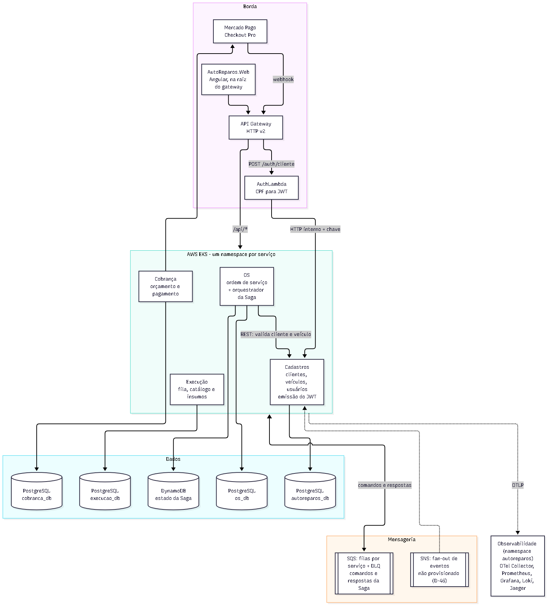

| Curso | Pós-Graduação em Software Architecture (SOAT) — FIAP |
|---|---|
| Turma | 15SOAT |
| Grupo | 78 |
| Fase | 4 — Microsserviços, Saga e CI/CD |
| Data de entrega | 17/11/2026 |
| Nome | RM |
|---|---|
| Enrico Gollner | rm370737 |
| José Dotta | rm372959 |
| Júlia Santos | rm370364 |
| Lucas Bastos | rm370749 |
| Mateus Lecchi | rm371085 |
Link: https://youtu.be/BqWcQaEuKAs
O vídeo tem até 15 minutos e mostra: o fluxo completo de uma OS pela Saga, da abertura ao pagamento pelo Mercado Pago; uma Saga com falha e as compensações em ordem inversa; o código do orquestrador, de uma compensação e da idempotência; o deploy automatizado de um serviço com os testes como gate; a proteção de branch bloqueando um PR; e o rastreamento no Jaeger, os logs no Loki e os dashboards do Grafana com tráfego real.
Todos os repositórios são públicos.
| Repositório | Responsabilidade | URL |
|---|---|---|
| AutoReparos (pai) | Orquestração por submódulos, specs, scripts e documentação | github.com/Grupo78-PosTech-15SOAT/AutoReparos |
| AutoReparos.OS | Ordens de serviço e orquestrador da Saga (PostgreSQL e DynamoDB) | github.com/Grupo78-PosTech-15SOAT/AutoReparos.OS |
| AutoReparos.Cobranca | Orçamento, pagamento e Mercado Pago (PostgreSQL) | github.com/Grupo78-PosTech-15SOAT/AutoReparos.Cobranca |
| AutoReparos.Execucao | Fila de execução, catálogo e insumos (PostgreSQL) | github.com/Grupo78-PosTech-15SOAT/AutoReparos.Execucao |
| AutoReparos.Cadastros | Clientes, veículos e usuários; emissão do JWT (PostgreSQL) | github.com/Grupo78-PosTech-15SOAT/AutoReparos.Cadastros |
| AutoReparos.Web | Aplicação Angular | github.com/Grupo78-PosTech-15SOAT/AutoReparos.Web |
| AutoReparos.AuthLambda | Autenticação serverless do cliente | github.com/Grupo78-PosTech-15SOAT/AutoReparos.AuthLambda |
| AutoReparos.Infra.Database | Terraform do RDS e provisionador de databases | github.com/Grupo78-PosTech-15SOAT/AutoReparos.Infra.Database |
| AutoReparos.Infra.K8s | Terraform do EKS, API Gateway e charts da plataforma | github.com/Grupo78-PosTech-15SOAT/AutoReparos.Infra.K8s |

A divisão segue o enunciado (OS, Cobrança e Execução) e acrescenta o Cadastros.
| Serviço | Responsabilidade | Por que é um serviço próprio |
|---|---|---|
| OS | Abertura, status e histórico da ordem de serviço; orquestrador e estado da Saga | É o dono do ciclo de vida da OS e o único que conhece o fluxo inteiro. Concentrar a orquestração aqui evita que cada serviço precise saber o que vem antes e depois dele. |
| Cobrança | Orçamento, aprovação, pagamento (Mercado Pago) e reembolso | Tem integração externa e regras de dinheiro próprias. Isolar limita o impacto de uma falha do provedor. |
| Execução | Fila, diagnóstico, etapas, catálogo de serviços e insumos com reserva | A reserva de insumos é passo e compensação da Saga e precisa da mesma transação da execução. |
| Cadastros | Clientes, veículos, usuários, emissão do JWT e JWKS | Reaproveita o código testado do aplicativo original (93% de cobertura) em vez de reescrevê-lo. Os demais serviços só validam o token. |
Alternativas descartadas: um quinto serviço de Estoque (um repositório, pipeline, chart e Sonar a mais, sem ganho de domínio) e o Cadastros dentro do OS (reescreveria código já verificado dentro de um serviço crítico).
| Decisão | Justificativa |
|---|---|
| PostgreSQL por serviço, numa instância RDS compartilhada, com database e usuário próprios | Garante que nenhum serviço acessa o banco de outro, sem o custo de uma instância por serviço. Um provisionador cria a database e o usuário de cada serviço, chamado pelo pipeline do próprio serviço. |
| DynamoDB para o estado da Saga | Atende ao requisito de um banco não relacional e combina com o acesso por chave: o estado é lido e gravado por ordemServicoId, com escrita condicional para evitar concorrência. |
| Sem leitura cruzada | Os serviços se consultam por REST (o OS valida cliente e veículo no Cadastros) e a AuthLambda chama um endpoint interno em vez de acessar o banco. |
O Cadastros usa a database autoreparos_db no RDS, herdada do aplicativo original.
| Decisão | Justificativa |
|---|---|
| REST síncrono só onde há resposta imediata | Validação de cliente e veículo, consulta de dados e autenticação. O restante é assíncrono. |
| SQS com DLQ | Desacopla os serviços e tolera falha de um participante. Mensagem que esgota as tentativas vai para a DLQ e pode ser reprocessada. |
| AWSSDK.SQS com Outbox e Inbox, sem MassTransit | A Outbox grava o evento na mesma transação do banco e a Inbox deduplica por eventId. Mantém o controle de retentativas e evita uma dependência a mais. |
| JWT assimétrico emitido pelo Cadastros | OS, Cobrança e Execução validam o token pela chave pública, sem compartilhar segredo de assinatura. |
| Pagamento depois da conclusão | Reflete o negócio da oficina: o cliente paga o serviço concluído, antes da entrega. |
| Mercado Pago Checkout Pro com webhook validado | Evita tratar dados de cartão e valida a origem das notificações pela assinatura. |
Saga orquestrada, com o OS como orquestrador. A OS tem passos sequenciais com compensação em ordem inversa (aprovar o orçamento, reservar insumos, liberar e concluir a execução, capturar o pagamento). Um ponto único que conhece o estado facilita travas, prazos, auditoria e intervenção manual. Na coreografia, esse conhecimento ficaria espalhado pelos eventos dos três serviços.
CompensacaoFalhou, que exige intervenção.eventId (Inbox): mensagem repetida é descartada. Cada passo tem prazo técnico com reenvio.AguardandoInsumos até o cancelamento, que compensa só o orçamento.Seis cenários BDD (Reqnroll, em português) em AutoReparos.OS.BddTests cobrem: o fluxo completo com pagamento aprovado; a OS sem insumos; o pagamento recusado; a falta de saldo na reserva; a liberação recusada pela Execução, com compensação em ordem inversa; e o cancelamento voluntário com insumos já reservados.
| Camada | Tecnologia | Motivo |
|---|---|---|
| Serviços | .NET 10, EF Core | Base do projeto desde a Fase 1; código testado reaproveitado |
| Frontend | Angular | Aplicação existente, extraída para um repositório próprio |
| Dados | PostgreSQL (RDS), DynamoDB | Ver seção 5 |
| Mensageria | SQS | Ver seção 6 |
| Execução | AWS EKS, Helm, API Gateway HTTP v2, Lambda | Plataforma provisionada nas fases anteriores; um chart e um pipeline por serviço |
| IaC | Terraform | Infraestrutura própria de cada serviço no repositório dele |
| CI/CD | GitHub Actions, SonarCloud | Pipeline independente por serviço: build, testes com cobertura mínima de 80%, quality gate e deploy com aprovação |
| Qualidade | xUnit, Reqnroll | Testes unitários e de integração; BDD do fluxo da OS e das compensações |
| Observabilidade | OpenTelemetry, Prometheus, Grafana, Loki, Jaeger | Mesma stack da Fase 3, aplicada aos serviços |
production do GitHub.main de OS, Cobrança, Execução, Cadastros e Web só aceita merge por PR com as checagens build e test verdes.